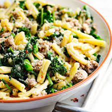

Pasta with Sausage and Broccolini
>

Description
Use any type of short dried pasta and try different veggies like bell pepper, tomatoes or asparagus
Ingredients
- 90g pasta
- salt
- olive oil
- garlic
- red pepper flakes
- 5oz sweet Italian sausage
- broccolini
- parmagiano reggiano
Steps
- Add olive oil to pan
- Cook sausage
- Boil water
- Add broccolini, garlic, and red pepper flakes to pan
- Turn down heat and cover/li>
- Add pasta to boiling water
- When pasta is done, transfer to pan with a little pasta water
- Cook 1 minute then transfer to bowl
- Add lots of parmagiano reggiano